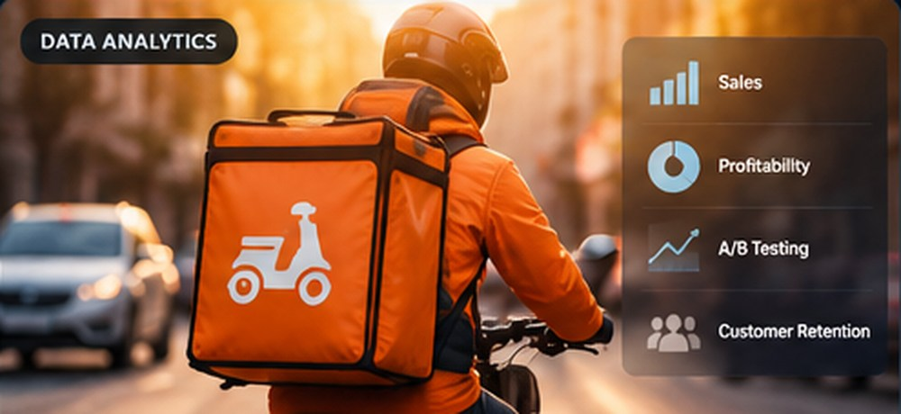

Data Analytics · Featured Case Study
RappiPlus — Business Performance & Profitability
End-to-end business analysis: data cleaning, profitability, conversion funnel, cohort retention, A/B testing, and Power BI reporting.
Explore case study →